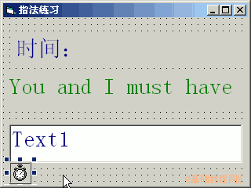
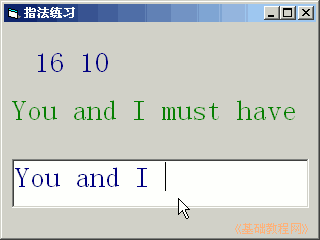

2011-2012 第一学期九年级 VB 教学课程设计
作者：TeliuTe 来源：基础教程网
七、定时器（时钟） 返回目录 下一课学习目标：学会使用定时器控件；
注意事项：定时器的 interval 属性别忘了；
1、绘制控件
1）打开一个标准EXE，绘制两个标签，一个文本框，一个定时器
Label1的Caption属性改为“时间：”，另一个标签改为“You and I must have”
定时器的 interval 属性设为1000，它的单位是毫秒；
2）设置好控件的字体和颜色；

3）进入代码窗口，点击对象下拉列表，依次选择“通用、Text1、Timer1”，在出来的代码段中分别输入；
4）保存为“第七课”，点菜单“运行－启动”，在文本框中输入内容；

课后记 2011-10-7 17:43：
带笔记本，把代码抄一下本节学习了定时器（时钟）的基础知识，如果你成功地完成了练习，请继续学习下一课内容；
本教程由86团学校TeliuTe制作|著作权所有
基础教程网：http://teliute.org/
美丽的校园……
转载和引用本站内容，请保留版权信息和本站链接。